Screenshots
Installation and Configuration
You need to configure a PDC account for each company. To do this, navigate to the Invoicing configuration settings and select the appropriate PDC account for both customers and vendors.
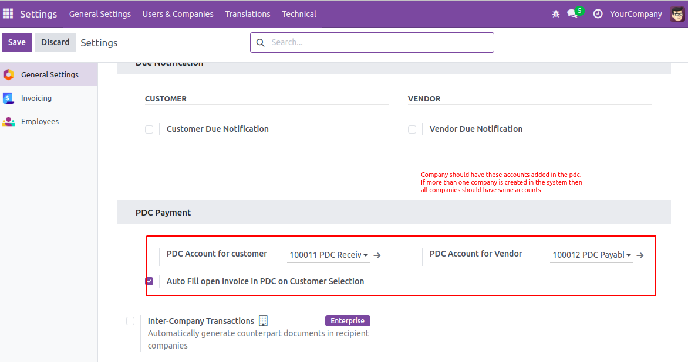PDC Check Register
Register PDC Cheque button in invoice form view *(Only visible in open state).
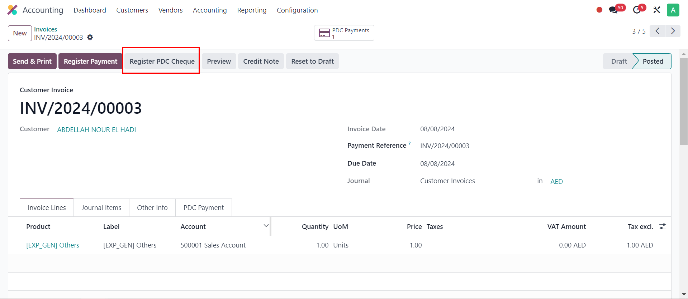PDC Wizard
Register PDC Cheque Wizard' will pop up after clicking the 'Register PDC cheque button.
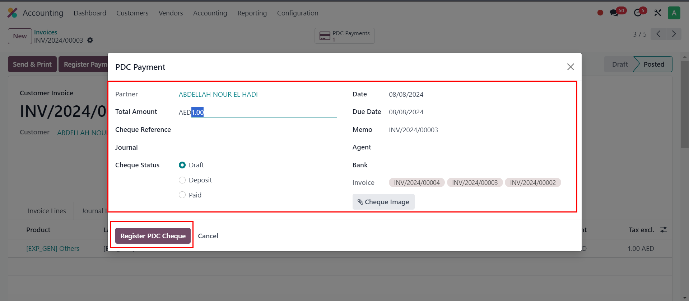PDC Payment Menu
The PDC Payments menu displays a list of all registered post-dated cheques.
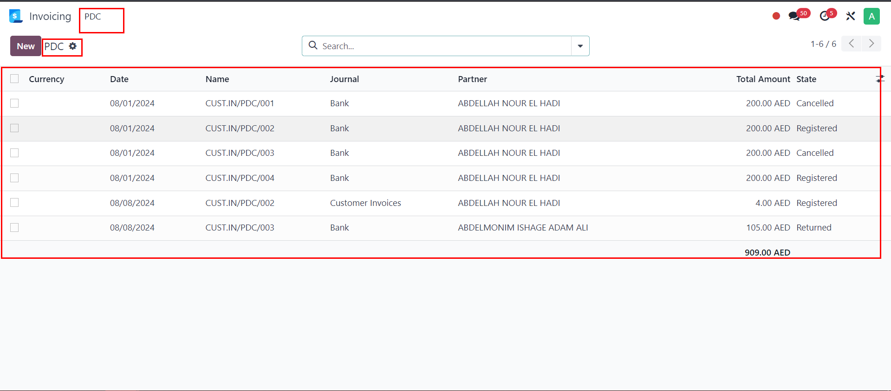PDC Payment Form
The PDC Payment form view allows you to deposit or return the cheque as needed.
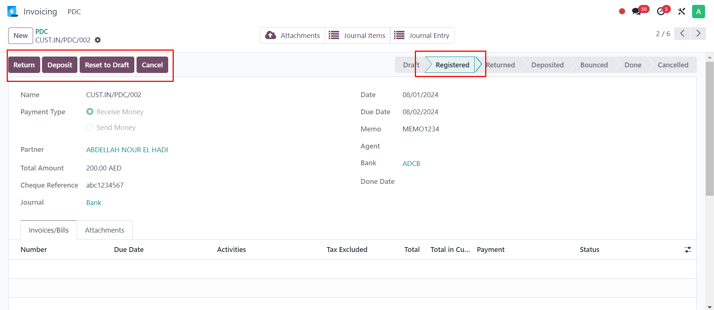Returned state
After clicking 'Return', the cheque status is updated to 'Returned'.
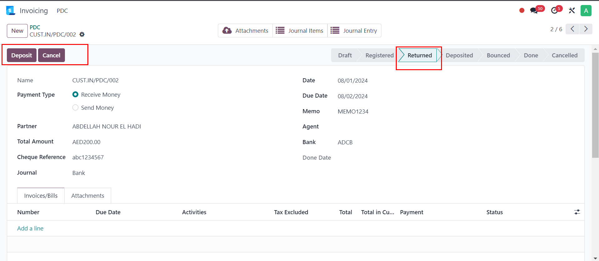Deposited State
After clicking 'Deposit', the cheque status changes to 'Deposited', and two new buttons — 'Bounced' and 'Done' — become visible.
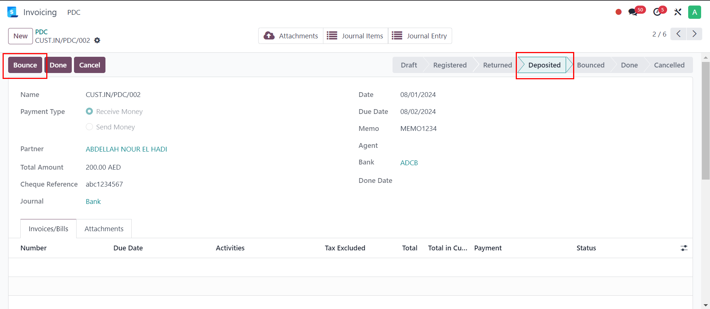Bounced State
If the cheque is bounced, click 'Bounce', and its status will be updated to 'Bounced'.
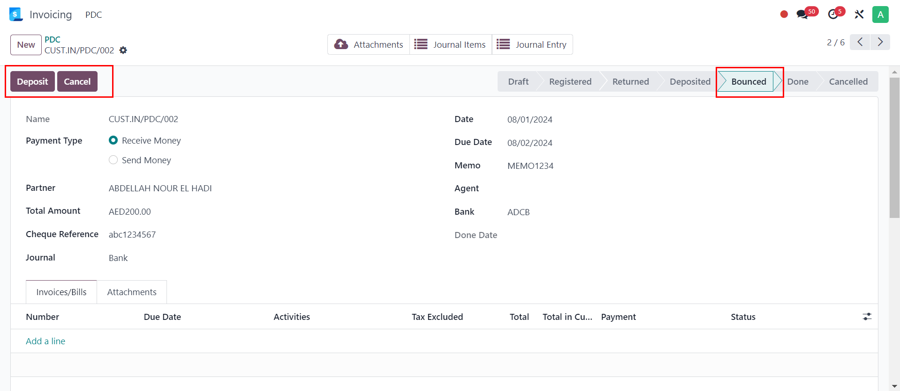Done State
If the cheque is successfully deposited, click 'Done', and its status will be updated to 'Done'.
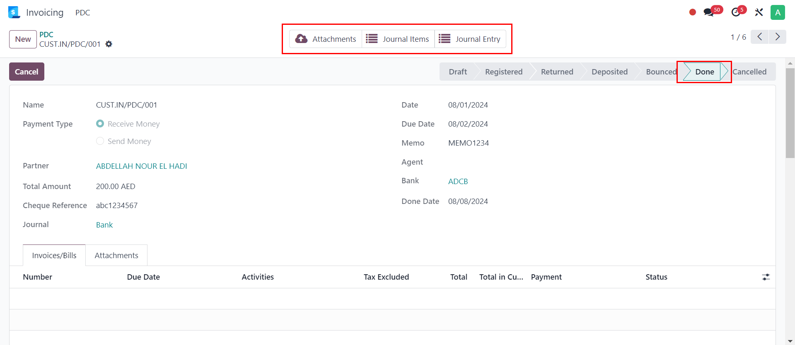Payment Enteries
In the Journal Items section, you can view all the PDC payment entries. The image below shows the entries created during each operation performed.
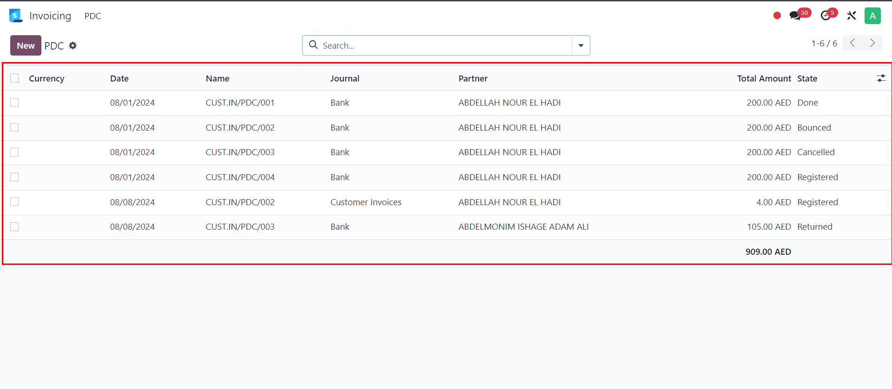Payment State
Invoice with the In-Payment state.
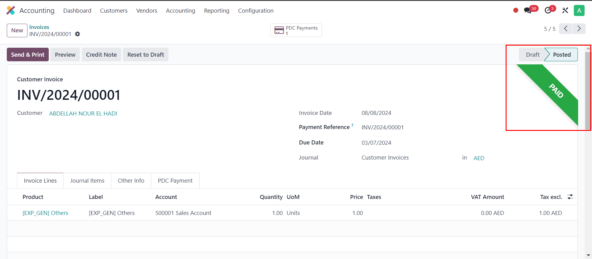PDF Report Menu
PDC payment report for print PDF report of multiple PDC cheque payments
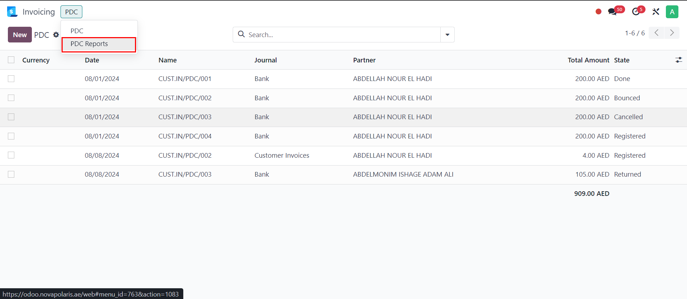PDC PDF Payment Report
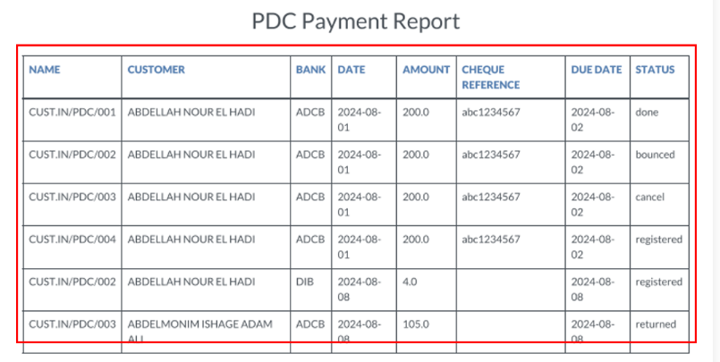
If Currently no any invoice/bill and we press "Done".

Journal Entry created of that payment

When the due amount becomes zero, a matching number is assigned to the invoice and bill for full reconciliation.
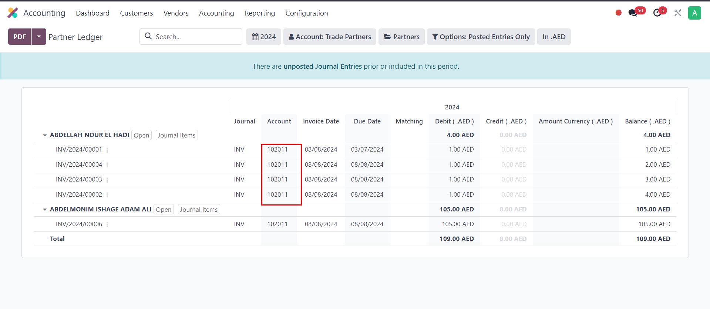